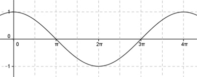

Aufgabe 260 Bestimmen Sie b für die dargestellten Graphen der Form y = a * cos (b * (x + c)) + d.  Abgelesen: Periode = 4п --> 2п |b| = ---- = 0,5 oder -0,5 wegen cos(x) = cos(-x) 4п acos(0,5(x + c)) + d oder acos(-0,5(x + c)) + d Abgelesen: Keine Verschiebung entlang der y-Achse --> d = 0 acos(0,5(x + c)) oder acos(-0,5(x + c)) Abgelesen: Keine Verschiebung entlang der x-Achse --> c = 0 acos(0,5x) oder acos(-0,5x) Abgelesen: |a| = 1 Keine Spiegelung an der x-Achse --> a = 1 --> y = cos(0,5x) oder y = cos(-0,5x).